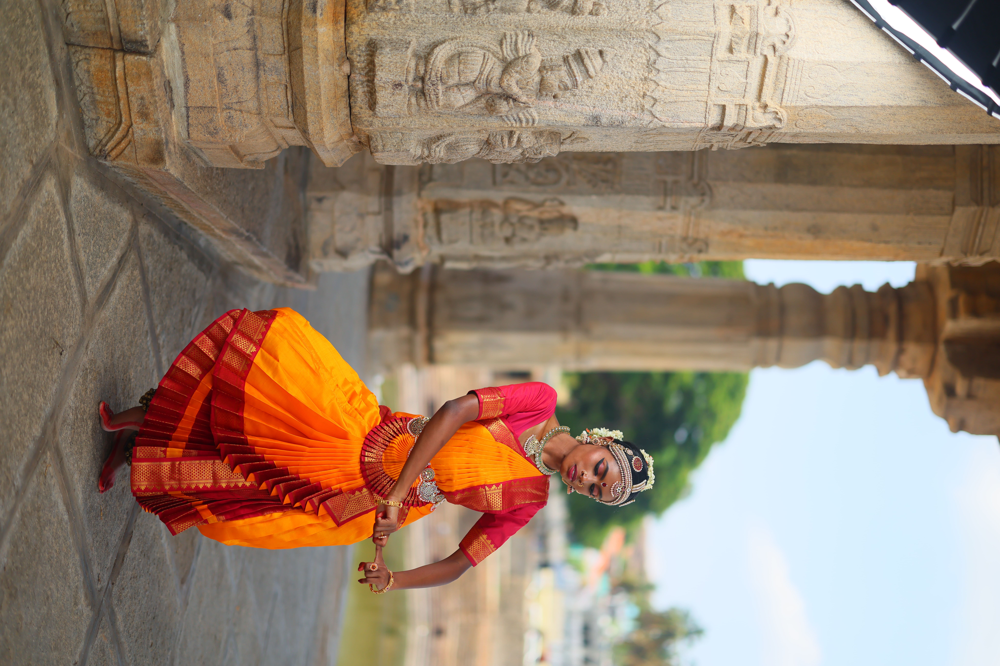
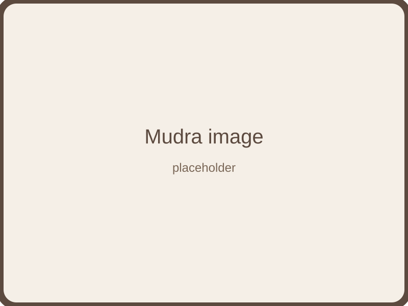
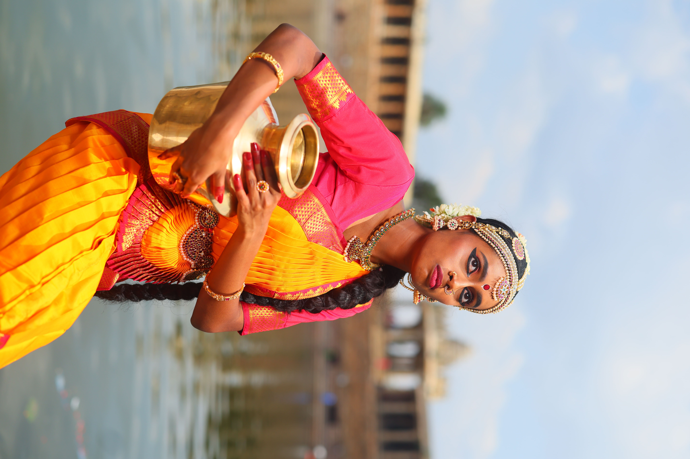

Visual Archive
Moments in Motion
A curated collection of images capturing the beauty, power, and grace of Bharatanatyam — from historic performances to contemporary expressions of this timeless art form.
Iconic Poses
Bharatanatyam is renowned for its sculptural beauty and geometric precision. These images showcase the form's distinctive postures and lines that create living sculptures on stage.

The fundamental half-sitting position that forms the base for many movements

Hand gestures that convey meaning and emotion

Dramatic poses showcasing the dancer's range and control
Performance Moments
Capturing the energy and dynamism of live performances, these images show Bharatanatyam in motion — the interplay of rhythm, expression, and movement that brings the art form to life.

Footwork patterns that demonstrate technical precision

Expressive storytelling through gesture and facial expression

The power of ensemble dance and synchronized movement
Facial Expressions
The face is a canvas of emotion in Bharatanatyam. These images highlight the nuanced abhinaya that brings characters and stories to life through subtle eye movements, lip positions, and brow expressions.

The nine classical emotions expressed through facial expression

The eloquent communication of the eyes in Bharatanatyam
Elements of Expression
- Eye movements and glances
- Lip and mouth positions
- Brow and forehead expressions
- Cheek and nose involvement
- Overall facial harmony
Costume & Adornment
The traditional Bharatanatyam costume is a work of art in itself. These images showcase the intricate jewelry, elaborate makeup, and carefully draped saris that complete the dancer's transformation.

Temple-inspired ornaments that enhance movement

Traditional facial adornment for visibility and expression

The art of wearing the Bharatanatyam sari